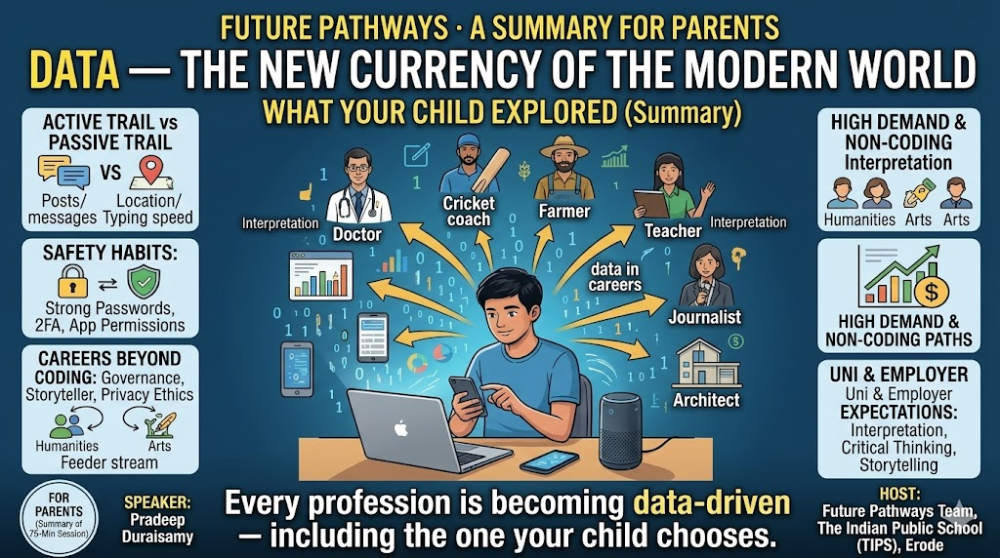

Data — The New Currency of the Modern World

Session title: Data — The New Currency of the Modern World
Speaker: Pradeep Duraisamy, The Indian Public School (TIPS), Erode
Audience: Grades 10, 11 & 12 · Duration: 75 minutes
Notes compiled by TIPS Future Pathways team. Figures cited (salaries, “11 million by 2027”, per-minute internet stats) are illustrative as cited in the session — the direction of demand matters more than any exact number.
Seventy-five minutes. Six sections. One argument that kept coming back no matter which slide was on the screen: data is no longer a subject for computer scientists. It is the operating system of every career your child might choose.
Pradeep Duraisamy’s session at TIPS Erode did something rare — it made data feel personal before it made it feel technical. That order matters. These notes reconstruct the full session so that anyone who missed it can follow the same thread.
How the 75 Minutes Flowed
| Block | Core message | Approx. time |
|---|---|---|
| 1. What is data? | You generate data every second — typed, done, and who you are | ~12 min |
| 2. Every profession is data-driven | You don’t need to be a data scientist; every career needs data literacy | ~12 min |
| 3. How organisations use data | Companies turn your data into decisions — so protect your identity | ~15 min |
| 4. Data careers beyond coding | Many high-paying data roles need little or no coding | ~13 min |
| 5. What universities & employers expect | Data literacy is rewarded — and you can build it for free | ~10 min |
| Interactive quiz + Q&A | Test instincts, correct myths, open questions | ~13 min |
Section 1: What Is Data?
“Data is the new oil — but unlike oil, it never runs out.”
The session opened by making data personal. The point: data is not something distant that only tech companies have — every student in the room had already produced data that morning, before the session even began.
Three Lenses on Your Data
| Lens | What it captures |
|---|---|
| What you type | Search queries, messages, comments, emails, passwords |
| What you do | Websites visited, videos watched, time spent on each app |
| Who you are | Age, location, device, language, purchase history |
Three Types of Data
| Type | Definition | Student-relatable examples |
|---|---|---|
| Structured | Rows & columns, like a spreadsheet | Name, age, exam score, salary |
| Unstructured | No fixed format | Photos, voice notes, emails, social media posts |
| Semi-structured | Somewhere in between | WhatsApp location pin, GPS trail, browsing log |
Every 60 Seconds on the Internet
A single slide was designed to land emotionally — everything below happens in the 60 seconds you were reading this paragraph:
- 6 million Google searches
- 500 hours of YouTube uploaded
- 1 million WhatsApp messages sent
- 2 million Instagram likes
- 300,000 tweets posted
- ₹75 crore+ online transactions processed
Your Digital Footprint: Active vs Passive
Before moving on, the session drew a distinction students rarely think about:
| Active footprint (you choose to share) | Passive footprint (collected without you realising) |
|---|---|
| An Instagram post; a WhatsApp message | Your location while using Maps |
| A Google search: “how to study faster” | How long you paused on a reel |
| A YouTube comment; signing up for an app | Your typing speed on a keyboard app |
| Smart assistants (Alexa, Google Home) sensing your surroundings |
Instagram, X and other social platforms remain free because of engagement farming — they deliver relevant content and ads by studying your behaviour. If you pause three minutes on a reel, the algorithm serves ten more like it.
This section’s job is awareness, not fear. The line that resonates with teenagers: “you are a data producer, not just a data user.” The active vs passive split sets up the digital-safety conversation in Section 3 — keep them connected.
Section 2: Every Profession Is Becoming Data-Driven
“You don’t need to be a data scientist. But every career now needs data literacy.”
This is arguably the most important section for students. It dismantles the belief that “data = computers = not for me.” Six everyday professions were chosen — deliberately including non-technical ones — to show that data has entered all of them.
| Profession | How they use data |
|---|---|
| Doctor | Analyses patient histories, test results & research to diagnose faster. India’s Ayushman Bharat scheme aims to centralise medical records nationwide. |
| Cricket coach | Uses ball-by-ball data, player fitness scores & pitch analytics for strategy. Batting styles — including Vaibhav Suryavanshi’s — are now decoded with data. |
| Farmer | Studies soil-sensor data, weather forecasts & crop-yield history for better harvests |
| Teacher | Tracks student performance data to spot who needs extra attention early |
| Journalist | Uses data journalism to visualise elections, COVID spread & economic trends |
| Architect | Analyses traffic flow, census & energy data to design smarter cities |
Data literacy ≠ data science. The distinction: literacy is reading, questioning and using data in your field; science is building the models. Almost everyone needs the first. Very few need the second. This is powerful for parents too — it reassures families that data skills are not a threat to medicine, law, design or sport, but an advantage inside them.
Section 3: How Organisations Use Data — Including Yours
The session shifted from “you create data” to “here is what powerful organisations do with it.”
The Flagship Example: American Express
Every card swipe creates a data point. Amex analyses 100+ variables — location, merchant type, time of day, spending pattern — in under 2 milliseconds to approve or flag the transaction. That is data saving money in real time, faster than a human could blink.
Four More Everyday Examples
| Company | What your data does for them |
|---|---|
| Notices you paused 3 seconds on a reel — then serves 10 more like it | |
| Zomato / Swiggy | Predicts your next order before you even open the app |
| Google Maps | Aggregates millions of location pings to show live traffic |
| Netflix | Produced Sacred Games based on viewing-pattern data from Indian users |
Protecting Your Digital Identity
Having shown how much organisations can do with personal data, the session handed students practical control. Six habits:
| Habit | Why / how |
|---|---|
| Use strong, unique passwords | A passphrase like “MyCatLoves3Mangoes!” beats “pass123” |
| Enable two-factor authentication (2FA) | Even a stolen password can’t get in without the second factor |
| Review app permissions | Settings → Apps → check access; revoke what isn’t needed |
| Google yourself | See what is publicly visible — often surprising |
| Use dedicated email addresses | Separate accounts for work, shopping, banking, social media |
| Think before you post | Once online, it can be copied, edited, morphed & screenshotted — forever. AI makes this more serious than ever. |
Data is empowering and exposing at the same time. Relay both halves — never just one. “Think before you post” was highlighted in the session as the emphasis line, especially given AI image-morphing. This connects directly to student wellbeing conversations.
Section 4: Data Careers Beyond Coding
“You don’t have to code to build a career in data. Here’s what the field actually looks like.”
This is the direct careers payload — the most useful section for subject-choices conversations. Each role is tagged with coding load and which school stream feeds into it.
| Role | Coding | What they do | Feeder stream |
|---|---|---|---|
| Data Analyst | Low | Answers business questions using data | Commerce / Science |
| Data Scientist | High | Builds predictive models & AI | Science / Maths |
| Data Governance | None | Ensures data is accurate, safe & compliant | Any stream |
| Business Intelligence | Low | Translates data into business decisions | Commerce / MBA |
| Data Privacy Officer | None | Protects customer data & ensures compliance | Humanities / Law |
| Data Storyteller | None | Communicates insights through visuals & narrative | Arts / Media |
The Demand Is Real — and So Is the Pay
India will need an estimated 11 million data professionals by 2027 — and supply is far below demand. Average starting salaries cited in the session (illustrative):
| Role | Avg. starting salary (₹ lakhs p.a.) |
|---|---|
| Data Analyst | 7 |
| BI Engineer | 10 |
| Data Scientist | 14 |
| Data Engineer | 16 |
| ML Engineer | 20 |
- #1 most in-demand skill globally (LinkedIn 2024, as cited in session)
- 3× data roles grew three times faster than other tech roles in India (2022–24)
- 97% of Fortune 500 companies invest in big data & AI
The “Any stream / Humanities-Law / Arts-Media” rows are the breakthrough — they give Commerce, Humanities and Arts students a credible, well-paid data pathway without forcing them into heavy coding. The most valuable profile is domain knowledge + data literacy: a biology student who can read data, not a coder with no field. Present salaries as illustrative starting bands, not guarantees.
Section 5: What Universities & Employers Actually Expect
| Universities expect | Employers expect |
|---|---|
| Ability to interpret graphs, charts & statistics | SQL / Excel — most jobs list these |
| Basic Excel / spreadsheet competency | Data storytelling — present insights, not just numbers |
| Critical thinking with data (not just memorising) | Domain knowledge + data = most valuable combination |
| Understanding of research methodology | Problem-solving with incomplete or messy data |
| Awareness of data ethics & privacy | Communication: turning analysis into decisions |
Notice the overlap: both lists reward interpretation, communication and ethics over raw coding. That is reassuring and actionable for almost every student. And the closing promise from the session: “you can start building this for free, today.”
Quick Quiz — Test Your Data Instincts
Three questions were run with students, then revealed with the reasoning. They work equally well as discussion openers in any class or counselling conversation.
| Question | Answer | The teaching point |
|---|---|---|
| Q1. Netflix spent ₹400 crore producing a show without a single audience test. How? (A) Guessed by genre (B) Used viewer data to predict demand (C) Copied a Hollywood idea | B | Netflix analysed 200M+ subscriber viewing patterns to know what content would succeed in India — data replaced guesswork. |
| Q2. You search “fever medicine” and 10 minutes later see health-insurance ads on Instagram. Why? (A) Coincidence (B) Your phone’s mic is listening (C) Data brokers share info across platforms | C | Data brokers legally buy & sell search data; platforms share anonymised but traceable profiles. It is not the microphone myth. |
| Q3. Which of these is NOT a data career? (A) Data Ethicist (B) Data Agent (C) Data Visualisation Designer | B | (A) and (C) are real, growing roles. Ethics and visual communication are now central to the data world. |
Q2 is the most valuable to explain carefully — it corrects the widespread “my phone is listening” myth and replaces it with the real mechanism: data brokering. Teenagers find this more surprising and more actionable than the microphone story.
The Four Key Takeaways
- Every profession is becoming data-driven — including yours, whatever you choose.
- Organisations collect and use your personal data every day — know your rights and your habits.
- Data careers are wide — governance, storytelling, privacy and ethics need no coding at all.
- Universities and employers both reward data literacy — and you can start building it for free, today.
“The world’s most valuable resource is no longer oil — it’s data.” — The Economist, 2017
Stream → Data Role: Quick Reference
Use this when a student says “data isn’t for my stream.”
| If the student is in… | Realistic data roles to explore | Coding load |
|---|---|---|
| Science / Maths | Data Scientist, ML Engineer, Data Engineer | Medium – High |
| Commerce | Data Analyst, Business Intelligence | Low |
| Humanities / Law | Data Privacy Officer, Data Governance, Data Ethicist | None |
| Arts / Media | Data Storyteller, Visualisation Designer | None |
| Any stream | Data Governance, Data Ethicist | None |
Three Discussion Questions to Try
- “Name one piece of passive data you produced before you walked in today.”
- “Pick your dream career — now tell me one way data already lives inside it.”
- “Which data role surprised you because it needs no coding — and why?”